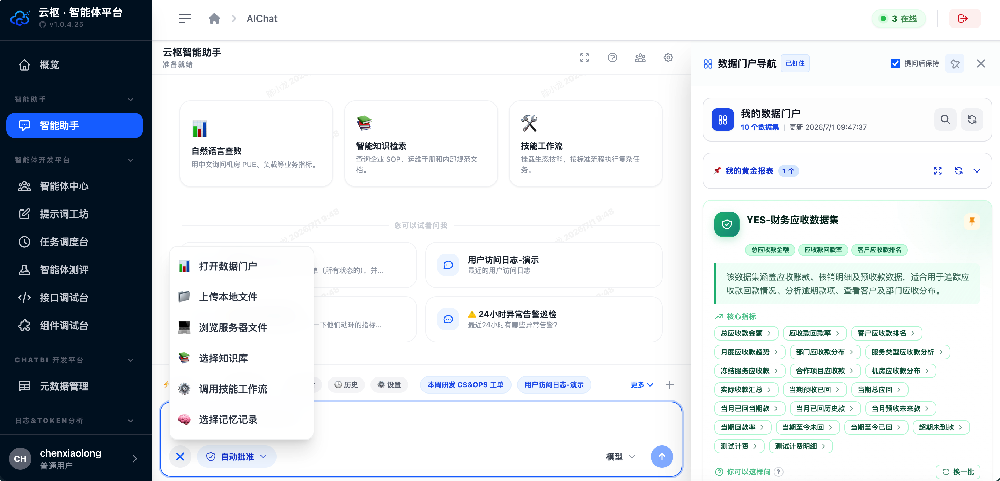
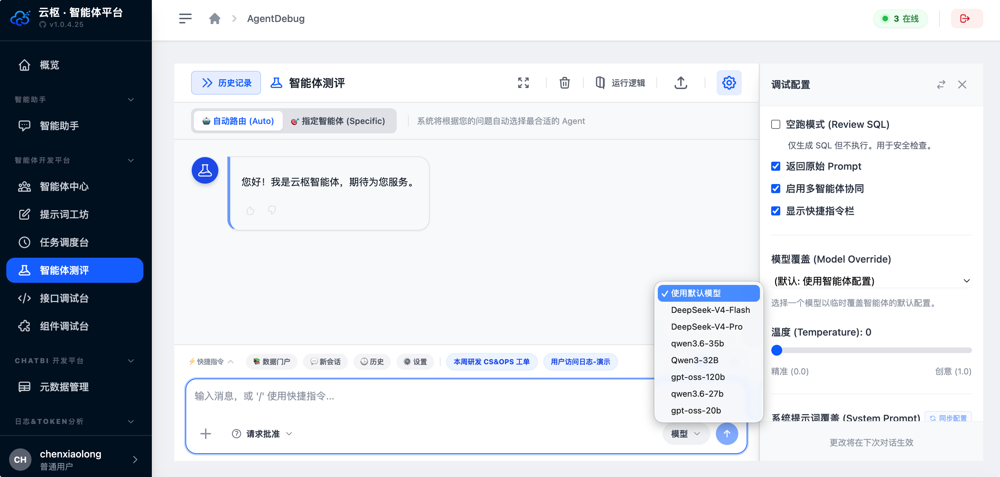
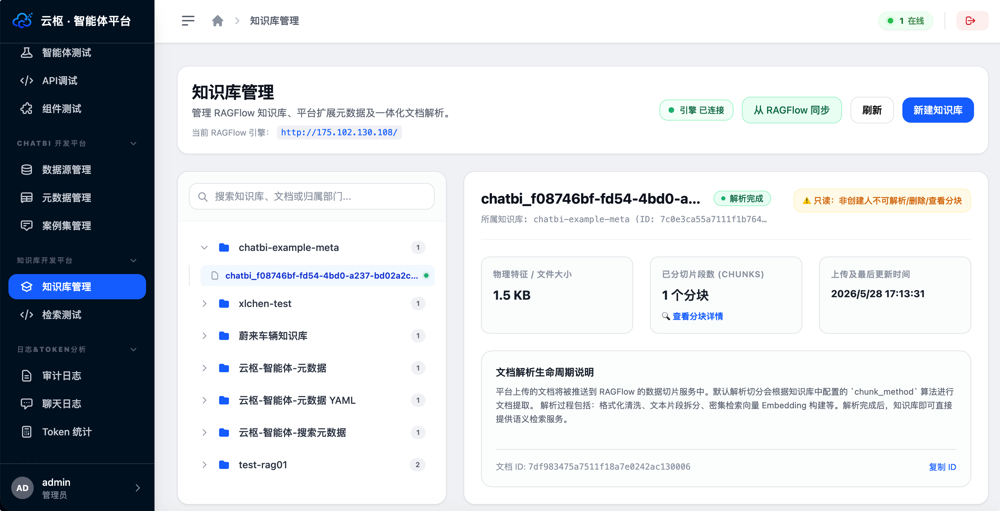
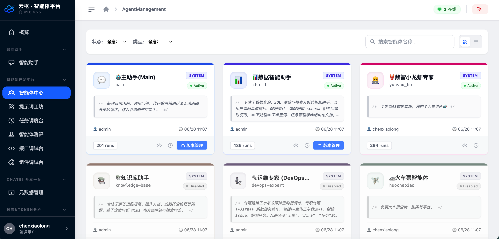
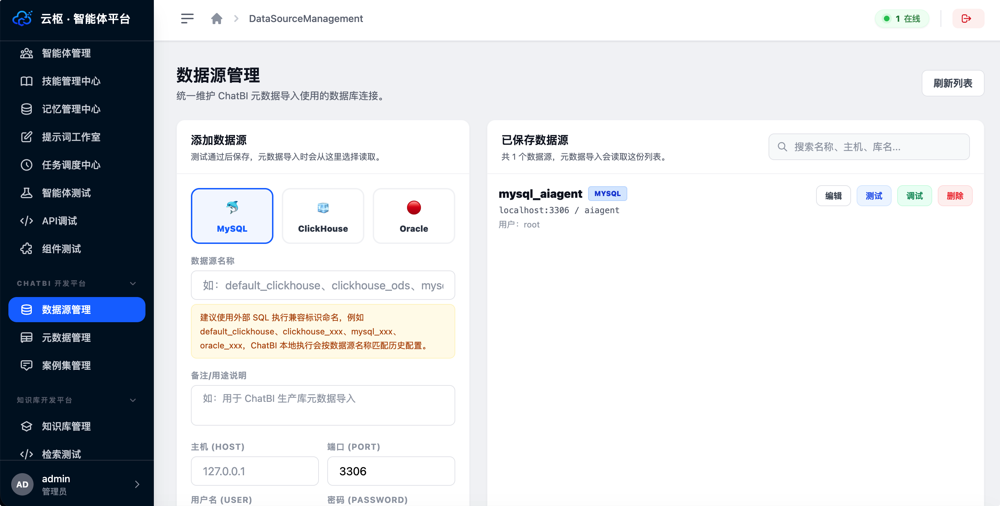

多专家路由
支持自动意图路由、专家模式、agent_id 与 @ 提及直选，多专家结果可由 Synthesizer 聚合。
Capabilities
支持自动意图路由、专家模式、agent_id 与 @ 提及直选，多专家结果可由 Synthesizer 聚合。
Assistant、ChatBI、Knowledge 执行器基于 AgentScope 与 Toolkit 闭环调度工具。
元数据注入、Few-Shot 案例、SQL 自愈、sql_plan 卡片和我的数据门户支撑自然语言查数。
树形文档管理、召回测试、语义合并、RAGFlow 托管路径与引用卡片，降低知识幻觉。
通过 MCP 连接企业系统、插件与生产力工具，让智能体具备可审计的业务执行能力。
Embed Chat SDK 对接现有鉴权和租户体系，Trace 时间线、导出与水印保障生产可控。
Workflow
Screens





Use Cases
用自然语言查业务指标，同时保留权限、元数据、SQL 护栏和可追踪结果。
把非结构化文档、语义元数据和业务口径接入智能体上下文。
通过 Embed SDK 把智能体嵌到门户、工单、运营后台或内部系统。
Contact
适合从企业智能中枢、数据门户、知识库、MCP 工具或嵌入式 Chat SDK 开始讨论。
cexlong@gmail.com